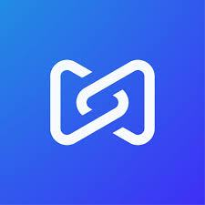

Ben Turner.
Belfast, UK · Remote / hybrid benturner.work +44 7546 182198 Benjamin.turner.design@gmail.com linkedin.com/in/benturnerwork
Summary
Product Designer with over seven years of experience across B2B SaaS, enterprise software and agency teams. I use research and product analytics to simplify complex workflows, including automation builders, permissions and enterprise onboarding. I work closely with product managers and engineers from discovery through delivery, contributing production UI code and using AI tools to support design and development.
Selected experience

Product Designer
September 2025 to present
Perforce Enterprise planning and digital asset management software for games and media.
Lead designer for planning and DAM tools used by major studios, including Electronic Arts, Xbox Game Studios and Meta.
- Redesigned sales trial onboarding to remove complex setup steps and help prospects evaluate the software sooner. Sales representatives reported easier customer conversations and more opportunities to discuss the product.
- Worked with my product manager to clarify feature requirements, then wrote production UI code and refined it through developer reviews.
- When the front-end team shrank from six developers to two, I contributed production code and reusable specification tools to help maintain delivery. The team shipped about 25% more features in Q3 2026 than Q2, while planning meetings fell from an hour to 30 minutes per feature.
- Redesigned search, navigation filters and asset previews to address usability problems that previously forced users to rely on the browser back button.
- Designed Capacity Planning to help teams understand how much work they could take on.
- Built Claude skills, MCP servers and Figma plugins to support design and development, including a workflow that turned feature discussions into structured specifications. This specification workflow won Best Designed at the 2026 company hackathon; at least three product teams now use it or parts of it.
Product Designer
July 2024 to July 2025
Budibase Open-source, low-code platform for internal applications, automations and AI agents.
- Owned end-to-end product design for features across application building, automation and enterprise administration.
- Designed and ran a paid Maze study with 25 active users, identifying problems with debugging, data visibility and guidance. Presented findings to the CEO, CMO and Head of Engineering to inform the redesign.
- Worked with lead developers and the executive team to redesign the tool customers use to automate tasks. Made it easier to see what happened at each step, identify errors and fix problems.
- After launch, monthly complaints and requests for help with automations on the community Discord dropped to zero, down from eight to ten. Budibase later used the redesigned tool as the foundation for its AI agents.
- Designed complex enterprise features, including conditional branching, role-based permissions and spreadsheet-style formula calculations.
- Redesigned licensing workflows to simplify enterprise onboarding across cloud, self-hosted and air-gapped deployments.
- Led CityFibre portal research with 40 users, coordinating product managers, developers and designers through interviews, usability tests and card sorting. Synthesised over 1,400 data points to guide the redesign; subsequent testing showed satisfaction rising from 4/10 to 8/10.
- Used Mouseflow session recordings to identify distractions drawing visitors away from CityFibre's postcode checker. Redesigned the homepage around this key task; postcode checks increased by 90% compared with the month before launch.
- Worked with a product manager, three front-end developers and a wider back-end team to deliver CityFibre's website and portal. Aligned the Figma design system with CraftCMS and Tailwind, reducing design tickets returned for incorrect implementation from 15% to 5%.
- Designed SportsWork from initial concept through launch, covering branding and product design. The startup subsequently became an independent, profitable business.
- Created enterprise design systems for clients including CityFibre and GSMA, and mentored junior and mid-level designers as the internal team grew from two to six.
Further experience and full career history are available on LinkedIn.
Skills
Product and UX design: Interaction design, complex workflows, information architecture, user research, usability testing, enterprise onboarding, systems thinking, accessibility (WCAG AA).
Design systems and visual design: Component libraries, design tokens, typography, visual hierarchy, responsive interfaces.
Analytics and research tools: PostHog, Google Analytics, Hotjar, Mouseflow, Maze, Typeform.
Front-end: HTML, CSS, Tailwind CSS, Git, production UI development, coded prototypes, component-driven development.
AI and workflows: Claude Code, Cursor, Claude skills, MCP servers, Figma Make, AI-assisted prototyping, encoding design systems for AI.
Design and delivery tools: Figma, Jira, local development environments.
Education
BDes (Hons) Interaction Design - First Class
Ulster University · 2017 to 2021
Interests
Martial arts since 2007: BJJ purple belt, Japanese Jiu-Jitsu black belt and Judo green belt. Warhammer 30k, gym, fishkeeping, karting, travel and dogs.